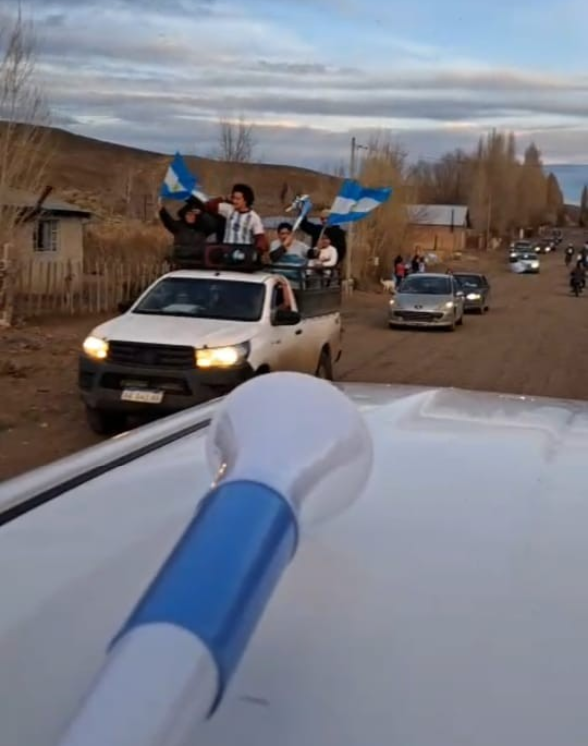
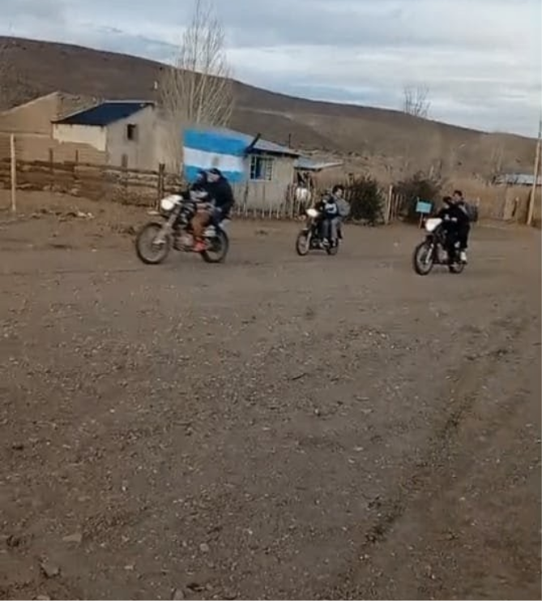
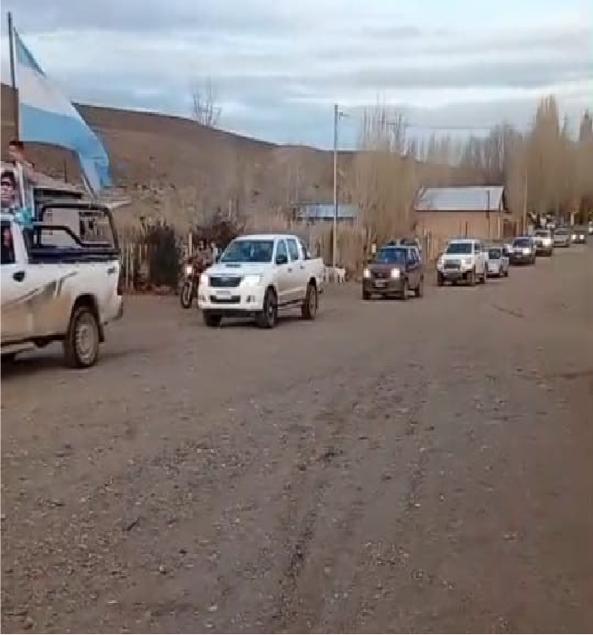

¿Alguna vez pensaste cómo un deporte puede unir tanto a una comunidad?
A lo largo del tiempo podemos ver cómo los festejos argentinos han sido eufóricos y cargados de una pasión inexplicable, que podemos decir que al día de hoy ya es propia de nosotros como nación.
Esto se ha trasladado a distintas zonas del país, algunas más eufóricas que otras, y otras un tanto calmadas. A continuación les contaremos detalladamente los festejos de nuestra localidad.

La Scaloneta nos unió
Durante el Mundial de Fútbol FIFA World Cup 2026, en Río Chico se vivió el fútbol con mucha emoción y entusiasmo.
Cada partido de la Selección Argentina se esperaba con muchas ganas y todos queríamos que la Scaloneta ganara. Había nervios cuando el partido estaba parejo y mucha alegría cuando Argentina lograba ganar.
A medida que la Scaloneta avanzaba de ronda, aumentaba la emoción y las ganas de verla llegar a la final. Hasta que llegó el momento de jugar contra los ingleses: ese partido se vivió de una manera diferente, había nervios, ansiedad y preocupación, pero después de los 90 minutos logró ganar la Scaloneta.
Esa tarde salimos a festejar todo el pueblo. Llorábamos, pero no de tristeza sino de alegría: ese festejo se vivió como si Argentina hubiera ganado la final.

La final contra España
Era todo perfecto hasta que llegó la final contra España. Se vivió con muchos nervios, ilusión y orgullo por todo el camino recorrido. Aunque Argentina haya perdido la final, quedó la tristeza por no conseguir el campeonato, pero también mucho orgullo.

Recuerdos inolvidables
Del Mundial 2026 en Río Chico conseguimos muchos recuerdos, emociones y momentos compartidos con la familia y la comunidad.
En conclusión, el Mundial 2026 se vivió con mucha fe y emoción en Río Chico. Fue una oportunidad para compartir con la familia y los amigos, sentir orgullo por nuestra selección y disfrutar juntos de cada partido.
Aarón Gaminao · Rodrigo Fhaile · Enrique González · Gonzalo Osuna · Brandon Muñoz · Aldana Railaf · Misael Castañeda · Geremías González · Benicio Sepúlveda · Sede Río Chico, Anexo N.º 14